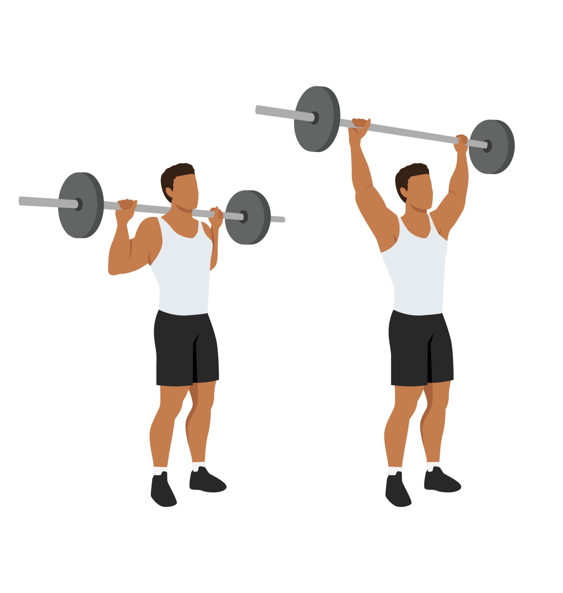

Exercise Description
Sit or stand with a barbell resting on your upper traps, behind your neck. Press the barbell overhead until your arms are fully extended, then lower it back to the starting position behind your neck.
Reps and Sets
Beginners: 3 sets of 12-15 reps
Weights: 5-7kg dumbbell per plate
Rest time between each set: 45secs
Video Implementation